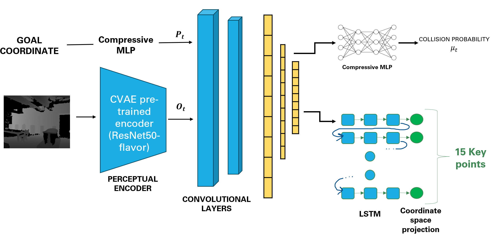

Learning-Based Robot Navigation
Abstract
We introduce a unified learning-based framework for real-time autonomous navigation in complex environments, integrating perception and path planning into a single pipeline. Building upon the iPlanner, an end-to-end policy planning model originally developed for ground robots, we adapt its Bi-Level Optimization (BLO) process for efficient navigation, creating safe and dynamically feasible trajectories through an improved state representation and incorporating spatiotemporal dependencies within the network. Central to our approach is the application of a pre-trained Convolutional Variational Autoencoder (CVAE) which efficiently extracts crucial features from depth images and simultaneously mitigates high-frequency noise. The low-dimensional rich information is fused with an expanded goal representation to feed downstream planning tasks. We exploit the spatio-temporal sequential nature of the planning task with Long short-term memory (LSTM) networks to generate an extended sequence of keypoint paths. Our loss function uses the optimization process to prioritize the safety and dynamic feasibility of the paths generated. We train our model entirely in simulated environments, employing various data augmentation techniques to reduce the sim2real gap. We present the results of our ablation study for our pre-trained CVAE, trained our end-to-end pipeline, and show comparable results to iPlanner while succeeding in cases where large obstacles are present. We also show our Navigation Success Rate is around 88 % which is close to the iPlanner paper (86 %) while being very light. Finally, we set the stage for future hardware implementation.
High-Level Pipeline Depiction
The Baseline Implementation

Improved Pipeline Implementation

Conclusion and Future Work
In this work, we addressed the challenges of robot navigation with a robust methodology to cope with real-world variability and dynamic constraints. Our bi-level optimization leverages the deterministic nature of trajectory planning to guide a stochastic neural network, enhancing path dynamic feasibility. To improve our baseline iPlanner, we presented a lighter model where we reasoned about the state representation and the planning task logic. On the one hand, the integration of a VAE-trained encoder enriches feature extraction and perceptual understanding of the state to benefit all downstream planning tasks. On the other hand, spatiotemporal dependencies between key points of the resulting path are being captured with an LSTM-based sequence generator. Our results showed comparable performance against our baseline, particularly in complex scenarios. However, the number of key points is still a hard-coded hyperparameter which emerged as a limitation, indicating the need for a dynamic key point determination mechanism in future enhancements.